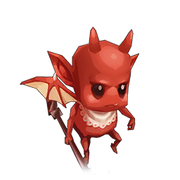
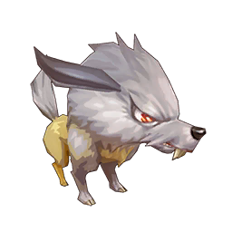
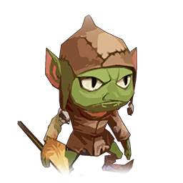
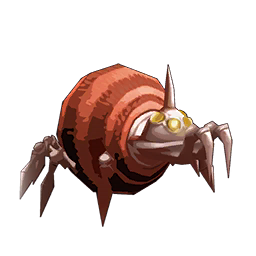

| ID | 名前 | 詳細 | 数値 | 對象 | 追加状態 (自) | 追加状態 | 画像 | アイテム/人物/敵 |
|---|---|---|---|---|---|---|---|---|
| 1 | ダンシングブレード | オーラを剣に纏い200%のダメージを与える | 2, 0 | 1人 | ||||
| 3 | マジックアッパー | 魔力で作りだした拳で200%のダメージを与える | 2, 0 | 1人 | ||||
| 13 | ビルドアップ | 闘志を燃やし、物理攻撃UP(微)を付与する | 0, 0 | 自 | 100% 物理攻撃UP(微) | |||
| 14 | ディフェンダー | 盾を構え、物理防御UP(微)を付与する | 0, 0 | 自 | 100% 物理防御UP(微) | |||
| 18 | ファイアブレード | 炎のオーラを剣に纏い300%のダメージを与える | 3, 0 | 1人 | 100% 火属性DOWN(微+) | |||
| 19 | アクアブレード | 水のオーラを剣に纏い300%のダメージを与える | 3, 0 | 1人 | 100% 水属性DOWN(微+) | |||
| 20 | グランドブレード | 土のオーラを剣に纏い300%のダメージを与える | 3, 0 | 1人 | 100% 土属性DOWN(微+) | |||
| 21 | ウインドブレード | 風のオーラを剣に纏い300%のダメージを与える | 3, 0 | 1人 | 100% 風属性DOWN(微+) | |||
| 31 | ヒートスタンプ | 3, 0 | 全人 | |||||
| 44 | スピアスラッシャー | 槍で衝撃波を放ち、300%のダメージを与える | 3, 0 | 1人 | ||||
| 45 | ファイアスラッシャー | 槍で炎の衝撃波を放ち、200%のダメージを与える | 2, 0 | 1人 | ||||
| 48 | ウインドスラッシュ | 槍で風の衝撃波を放ち、200%のダメージを与える | 2, 0 | 1人 | ||||
| 60 | アクアインパルス | 槍で強力な水の衝撃波を放ち、400%のダメージを与える | 4, 0 | 1人 | ||||
| 61 | グランドインパルス | 槍で強力な土の衝撃波を放ち、380%のダメージを与える | 3.8, 0 | 1人 | ||||
| 62 | ウインドインパルス | 槍で強力な風の衝撃波を放ち、400%のダメージを与える | 4, 0 | 1人 | ||||
| 66 | ファイアインパクト | 槍に炎のオーラを込めて叩きつけ、300%のダメージを与える | 3, 0 | 1人 | 100% 火属性DOWN(微+) | |||
| 67 | アクアインパクト | 槍に水のオーラを込めて叩きつけ、300%のダメージを与える | 3, 0 | 1人 | ||||
| 68 | グランドインパクト | 槍に土のオーラを込めて叩きつけ、300%のダメージを与える | 3, 0 | 1人 | 100% 土属性DOWN(微+) | |||
| 69 | ウインドインパクト | 槍に風のオーラを込めて叩きつけ、300%のダメージを与える | 3, 0 | 1人 | 100% 風属性DOWN(微+) | |||
| 76 | グランドスイング | 大地の力を纏った武器を振りおろし350%のダメージを与える | 3.5, 0 | 1人 | 100% 物理防御DOWN(小) | |||
| 79 | アップルドロップ | 大きなリンゴに変化させた武器を落とし200%のダメージを与える | 2, 0 | 1人 | ||||
| 80 | ファイアフラワドロップ | 燃えるように赤い花に変化させた武器を落とし250%のダメージを与える | 2.5, 0 | 1人 | 100% 火属性DOWN(微+) | |||
| 81 | マグロドロップ | 大きなマグロに変化させた武器を落とし250%のダメージを与える | 2.5, 0 | 1人 | 100% 水属性DOWN(微+) | |||
| 82 | グランドドロップ | 大きな花に変化させた武器を落とし250%のダメージを与える | 2.5, 0 | 1人 | 100% 土属性DOWN(微+) | |||
| 83 | バルーンドロップ | 巨大なバルーンに変化させた武器を落とし250%のダメージを与える | 2.5, 0 | 1人 | 100% 風属性DOWN(微+) | |||
| 86 | ティンクルドロップ | お星様に変化させた武器を落とし300%のダメージを与える | 3, 0 | 1人 | ||||
| 92 | トキシックドロップ | 大きな毒リンゴに変化させた武器を落とし400%のダメージを与える | 4, 0 | 1人 | 100% 毒 | |||
| 142 | マジックスパイク | 魔力で作りだした巨大な拳で200%のダメージを与える | 2, 0 | 1人 | ||||
| 143 | フレイムスパイク | 炎から作りだした巨大な拳で300%のダメージを与える | 3, 0 | 1人 | 100% 火属性DOWN(微+) | |||
| 144 | アクアスパイク | 氷から作りだした巨大な拳で300%のダメージを与える | 3, 0 | 1人 | 100% 水属性DOWN(微+) | |||
| 145 | グラビティアッパー | 大地から作りだした巨大な拳で300%のダメージを与える | 3, 0 | 1人 | 100% 土属性DOWN(微+) | |||
| 146 | ウインドスパイク | 竜巻から作りだした巨大な拳で300%のダメージを与える | 3, 0 | 1人 | 100% 風属性DOWN(微+) | |||
| 149 | マジックスマッシュ | 魔力で作りだした剛腕で300%のダメージを与える | 3, 0 | 1人 | ||||
| 171 | ファイアスウォーム | 炎を帯びた岩を呼び出し、350%のダメージを与える | 3.5, 0 | 全人 | ||||
| 172 | アクアスウォーム | 冷気を帯びた岩を呼び出し、320%のダメージを与える | 3.2, 0 | 全人 | ||||
| 173 | ガイアスウォーム | 地の奥深くから岩を呼び出し、320%のダメージを与える | 3.2, 0 | 全人 | ||||
| 174 | ウインドスウォーム | 風を帯びた岩を呼び出し、300%のダメージを与える | 3, 0 | 全人 | ||||
| 200 | ヒーリングシャワー | 癒しの雨を降らせ、最大ＨＰの30%回復 | 0.3, 0 | 全人 | ||||
| 205 | リバイブシャワー | 癒しの雨を降らせ、最大ＨＰの50%回復 | 0.5, 0 | 全人 | ||||
| 212 | ダウンヴェール | 魔力を放出し、魔法攻撃DOWN(小)を付与する | 3, 0 | 全人 | 100% 魔法攻撃DOWN(小) | |||
| 213 | アーマーダウン | 魔力を放出し、魔法防御DOWN(小)を付与する | 3, 0 | 全人 | 100% 魔法防御DOWN(小) | |||
| 219 | スナイプアロー | オーラを込めた矢で250%のダメージを与える | 2.5, 0 | 1人 | ||||
| 220 | ファイアアロー | 炎を纏った矢で250%のダメージを与える | 2.5, 0 | 1人 | 100% 火属性DOWN(微+) | |||
| 221 | アクアアロー | 水を纏った矢で250%のダメージを与える | 2.5, 0 | 1人 | 100% 水属性DOWN(微+) | |||
| 222 | ブロッサムアロー | 大地の力を纏った矢で250%のダメージを与える | 2.5, 0 | 1人 | 100% 土属性DOWN(微+) | |||
| 223 | ウインドアロー | 風を纏った矢で250%のダメージを与える | 2.5, 0 | 1人 | 100% 風属性DOWN(微+) | |||
| 226 | パワースナイプ | 限界までオーラを込めた矢で300%のダメージを与える | 3, 0 | 1人 | ||||
| 242 | スプラッシュレイン | 稲妻のように矢を降らせ300%のダメージを与える | 3, 0 | 全人 | 10% 凍結 | |||
| 244 | ウインドレイン | 稲妻のように矢を降らせ320%のダメージを与える | 3.2, 0 | 全人 | 10% 暗闇 | |||
| 262 | ワイドフレアショット | オーラを纏った矢を複数放ち300%のダメージを与える | 3, 0 | 全人 | 10% 火傷 | |||
| 264 | ワイドガイアショット | オーラを纏った矢を複数放ち320%のダメージを与える | 3.2, 0 | 全人 | 10% 沈黙 | |||
| 283 | フラムショット | フラムを矢で強制的に爆発させ400%のダメージを与える | 4, 0 | 1人 | 10% 火傷 | |||
| 284 | レヘルンショット | レヘルンを矢で強制的に爆発させ400%のダメージを与える | 4, 0 | 1人 | 10% 凍結 | |||
| 289 | ディフェンスアップ | 盾を構え、物理防御UP(微)を付与する | 2, 0 | 自 | 100% 物理防御UP(微) | |||
| 290 | ファイアアップ | 盾を構え、火属性UP(微)を付与する | 2, 0 | 自 | 100% 火属性UP(微) | |||
| 291 | アクアアップ | 盾を構え、水属性UP(微)を付与する | 2, 0 | 自 | 100% 水属性UP(微) | |||
| 292 | グランドアップ | 盾を構え、土属性UP(微)を付与する | 2, 0 | 自 | 100% 土属性UP(微) | |||
| 293 | ウインドアップ | 盾を構え、風属性UP(微)を付与する | 2, 0 | 自 | 100% 風属性UP(微) | |||
| 317 | オールディフェンス | 盾を掲げ、物理防御UP(小)を付与する | 3, 0 | 全人 | 100% 物理防御UP(小) | |||
| 318 | オールファイア | 盾を掲げ、火属性UP(小)を付与する | 3, 0 | 全人 | 100% 火属性UP(小) | |||
| 319 | オールアクア | 盾を掲げ、水属性UP(小)を付与する | 3, 0 | 全人 | 100% 水属性UP(小) | |||
| 320 | オールグランド | 盾を掲げ、土属性UP(小)を付与する | 3, 0 | 全人 | 100% 土属性UP(小) | |||
| 321 | オールウインド | 盾を掲げ、風属性UP(小)を付与する | 3, 0 | 全人 | 100% 風属性UP(小) | |||
| 332 | フレアタックル | 盾に炎のオーラを纏わせたタックルで200%のダメージを与える | 2, 0 | 1人 | ||||
| 333 | アクアタックル | 盾に水のオーラを纏わせたタックルで200%のダメージを与える | 2, 0 | 1人 | ||||
| 334 | グランドダッシュ | 盾に地のオーラを纏わせたタックルで200%のダメージを与える | 2, 0 | 1人 | ||||
| 335 | ウインドタックル | 盾に風のオーラを纏わせたタックルで200%のダメージを与える | 2, 0 | 1人 | ||||
| 338 | パワータックル | 盾に限界までオーラを纏わせたタックルで300%のダメージを与える | 3, 0 | 1人 | ||||
| 353 | フレイムインパクト | 武器に纏った炎のオーラを叩きつけ300%のダメージを与える | 3, 0 | 1人 | 100% 物理攻撃DOWN(小) | |||
| 374 | 剣聖の太刀 | 渾身の一太刀で衝撃波を飛ばし、敵全体に300%のダメージを与える | 3, 0 | 全人 | 100% スロウ | |||
| 388 | フレイムスラッシュ | 武器に纏った炎のオーラで強打して400%のダメージを与える | 4, 0 | 1人 | ||||
| 404 | グランドスラッシュ | 大地のオーラを纏った十字の剣閃で400%のダメージを与える | 4, 0 | 1人 | ||||
| 408 | パワーランサー | 力を込めた一突きで300%のダメージを与える | 3, 0 | 1人 | ||||
| 410 | アクアランサー | 水の力を込めた一突きで250%のダメージを与える | 2.5, 0 | 1人 | 100% 水属性DOWN(微+) | |||
| 412 | ウインドペネトレイト | 風の力を込めた一突きで400%のダメージを与える | 4, 0 | 1人 | 100% 物理防御DOWN(小) | |||
| 417 | アクアシュバルツァー | 水のオーラを纏った鋭い一突きで400%のダメージを与える | 4, 0 | 1人 | 100% 物理攻撃DOWN(小) | |||
| 418 | グランドペネトレイト | 土の力を込めた一突きで400%のダメージを与える | 4, 0 | 1人 | 100% 物理防御DOWN(小) | |||
| 419 | ウインドシュバルツァー | 風のオーラを纏った鋭い一突きで400%のダメージを与える | 4, 0 | 1人 | ||||
| 422 | 防御の構え | 構えを取り、物理防御UP(小)を付与する | 2, 0 | 自 | 100% 物理防御UP(小) | |||
| 429 | 鉄壁の構え | 構えを取り、物理防御UP(大)を付与する | 2, 0 | 自 | 100% 物理防御UP(大) | |||
| 436 | 攻撃の構え | 構えを取り、物理攻撃UP(小)を付与する | 2, 0 | 自 | 100% 物理攻撃UP(小) | |||
| 443 | 殲滅の構え | 構えを取り、物理攻撃UP(中)を付与する | 3, 0 | 自 | 100% 物理攻撃UP(中) | |||
| 450 | 回復の構え | 構えを取り、最大ＨＰの30%回復 | 0.3, 0 | 自 | ||||
| 482 | ウインドラッシュ | 風を纏った剣で怒涛の連続斬り。敵の物理攻撃力を下げる。 | 4, 0 | 1人 | 100% 物理攻撃DOWN(小) | |||
| 535 | フレアタワー | 火柱を発生させ350%のダメージを与える | 3.5, 0 | 1人 | 10% ピヨり | |||
| 536 | アクアタワー | 氷柱を発生させ350%のダメージを与える | 3.5, 0 | 1人 | 10% ピヨり | |||
| 537 | グランドタワー | 土柱を発生させ350%のダメージを与える | 3.5, 0 | 1人 | 10% ピヨり | |||
| 538 | ジーニアスウインド | 風柱を発生させ400%のダメージを与える | 4, 0 | 1人 | 100% 命中率DOWN(小+) | |||
| 541 | オールパワーアップ | 武器を薬に変化させ、雨のように降り注ぎ物理攻撃UP(中)を付与する | 3, 0 | 全人 | 100% 物理攻撃UP(中) | |||
| 544 | オールディフェンス | 武器を薬に変化させ、雨のように降り注ぎ物理防御UP(小)を付与する | 3, 0 | 全人 | 100% 物理防御UP(小) | |||
| 545 | オールスピードアップ | 武器を薬に変化させ、雨のように降り注ぎすばやさUP(小)を付与する | 3, 0 | 全人 | 100% すばやさUP(小) | |||
| 577 | フレアガトリング | 炎の魔法を連続発射して320%のダメージを与える | 3.2, 0 | 全人 | 100% 火属性DOWN(小) | |||
| 578 | アクアスプラッシュ | 水の魔法を連続発射して300%のダメージを与える | 3, 0 | 全人 | 100% 魔法攻撃DOWN(微) | |||
| 579 | グランドガトリング | 土の魔法を連続発射して300%のダメージを与える | 3, 0 | 全人 | 100% 土属性DOWN(小) | |||
| 580 | ウインドガトリング | 風の魔法を連続発射して320%のダメージを与える | 3.2, 0 | 全人 | 100% 風属性DOWN(小) | |||
| 581 | シャインスプラッシュ | 光の魔法を連続発射して420%のダメージを与える | 4.2, 0 | 全人 | 100% 魔法防御DOWN(中) | |||
| 635 | グランドショットガン | 天高く飛びあがり、大地の気を帯びた矢を射かけ320%のダメージを与える | 3.2, 0 | 全人 | 10% 暗闇 | |||
| 636 | ウインドショットガン | 天高く飛びあがり、風の気を帯びた矢を射かけ320%のダメージを与える | 3.2, 0 | 全人 | 10% 沈黙 | |||
| 640 | フレイムバースト | 盾に炎のオーラを集中させ放つことで300%のダメージを与える | 3, 0 | 1人 | ||||
| 641 | フリーズバースト | 盾に氷のオーラを集中させ放つことで300%のダメージを与える | 3, 0 | 1人 | ||||
| 642 | ガイアバースト | 盾に大地のオーラを集中させ放つことで300%のダメージを与える | 3, 0 | 1人 | ||||
| 643 | トルネドバースト | 盾に風のオーラを集中させ放つことで300%のダメージを与える | 3, 0 | 1人 | ||||
| 645 | アビスバースト | 盾に闇のオーラを集中させ放つことで320%のダメージを与える | 3.2, 0 | 1人 | ||||
| 653 | 炎の舞 | 盾を掲げ、火傷を付与する | 3, 0 | 全人 | 100% 火傷 | |||
| 654 | 沈黙の舞 | 盾を掲げ、沈黙を付与する | 3, 0 | 全人 | 100% 沈黙 | |||
| 655 | 鈍足の舞 | 盾を掲げ、すばやさDOWN(微)を付与する | 3, 0 | 全人 | 100% すばやさDOWN(微) | |||
| 656 | 盲目の舞 | 盾を掲げ、暗闇を付与する | 3, 0 | 全人 | 100% 暗闇 | |||
| 657 | 脱力の舞 | 盾を掲げ、物理攻撃DOWN(微)を付与する | 3, 0 | 全人 | 100% 物理攻撃DOWN(微) | |||
| 658 | 虚弱の舞 | 盾を掲げ、物理防御DOWN(微)を付与する | 3, 0 | 全人 | 100% 物理防御DOWN(微) | |||
| 660 | エンゼルシュート | ハートのオーラを飛ばし380%のダメージを与える | 3.8, 0 | 1人 | 10% ピヨり | |||
| 661 | パワーブレイク | オーラを剣に纏い280%のダメージを与える | 2.8, 0 | 1人 | ||||
| 662 | リザレクトシャワー | 癒しの雨を降らせ、最大ＨＰの50%回復 | 0.5, 0 | 全人 | ||||
| 663 | 星と月のソナタ | 星と月のオーラを飛ばし380%のダメージを与える | 3.8, 0 | 1人 | 100% スロウ | |||
| 664 | 堅守の構え | 構えを取り、物理防御UP(中)を付与する | 2, 0 | 自 | 100% 物理防御UP(中) | |||
| 665 | ウインドブラスト | 稲妻のように矢を降らせ300%のダメージを与える | 3, 0 | 全人 | 100% 物理攻撃DOWN(微) | |||
| 666 | ピヨリドロップ | お星様に変化させた武器を落とし250%のダメージを与える | 2.5, 0 | 1人 | 10% ピヨり | |||
| 667 | ブラインドアロー | オーラを込めた矢で250%のダメージを与える | 2.5, 0 | 1人 | 10% 暗闇 | |||
| 668 | スリープショット | 魔力で作りだした巨大な拳で250%のダメージを与える | 2.5, 0 | 1人 | 10% 眠り | |||
| 669 | パワーディフェンス | 盾を構え、物理防御UP(小)を付与する | 2, 0 | 自 | 100% 物理防御UP(小) | |||
| 700 | クラフトシュート | クラフトを作り出して、320%のダメージを与える | 3.2, 0 | 全人 | 100% 魔法攻撃DOWN(微) | |||
| 701 | ヒンメルウォルツ | 華麗なる槍さばきで450%のダメージを与える | 4.5, 0 | 全人 | 100% 水属性DOWN(小+) | |||
| 702 | ロリポップブレード | 特別なオーラを剣に纏い300%のダメージを与える | 3, 0 | 1人 | ||||
| 703 | ハロウィンブレード | 特別なオーラを剣に纏い400%のダメージを与える | 4, 0 | 1人 | ||||
| 704 | ハロウィンショット | 特別なオーラを纏った矢を複数放ち320%のダメージを与える | 3.2, 0 | 全人 | ||||
| 705 | ロリポップスパイク | 魔力で作りだした特別な力で300%のダメージを与える | 3, 0 | 1人 | ||||
| 706 | ハロウィンスウォーム | 特殊な岩を呼び出し、320%のダメージを与える | 3.2, 0 | 全人 | ||||
| 707 | ロリポップドロップ | 特別な物質に変化させた武器を落とし300%のダメージを与える | 3, 0 | 1人 | ||||
| 708 | ハロウィンタワー | 特別な力が噴出して400%のダメージを与える | 4, 0 | 1人 | ||||
| 709 | エンジェルランス | 力を込めた一突きで400%のダメージを与える | 4, 0 | 1人 | 100% 回避率DOWN(微) | |||
| 710 | エンジェルアロー | 限界までオーラを込めた矢で400%のダメージを与える | 4, 0 | 1人 | 100% 物理防御DOWN(小) | |||
| 711 | 槍 バフ | 0, 0 | 自 | 100% すばやさUP(小) | ||||
| 712 | 槍 回復 | 0, 0 | 自 | |||||
| 713 | 弓 バフ | 0, 0 | 自 | 100% 物理攻撃UP(小) | ||||
| 714 | 弓 回復 | 0, 0 | 自 | |||||
| 715 | メテオストーム | 火の玉を降らせて320%のダメージを与える | 3.2, 0 | 全人 | 100% 火傷 | |||
| 716 | フロウレスシャイン | 無数の光で320%のダメージを与える | 3.2, 0 | 全人 | 100% スロウ | |||
| 717 | グランドランス | 槍で強力な土の衝撃波を放ち、400%のダメージを与える | 4, 0 | 1人 | 100% 物理攻撃DOWN(小) | |||
| 718 | フレアゾーン | ゾーン変更(仮) | 105, 0 | - | ||||
| 719 | アクアゾーン | ゾーン変更(仮) | 205, 0 | - | ||||
| 720 | ウインドゾーン | ゾーン変更(仮) | 305, 0 | - | ||||
| 721 | アースゾーン | ゾーン変更(仮) | 405, 0 | - | ||||
| 722 | マジックアップ | 盾を構え、魔法攻撃UP(微)を付与する | 0.1, 0 | 自 | 100% 魔法攻撃UP(微) | |||
| 723 | エーテルスピア | 武器にエネルギーを纏わせて敵に投げつけ400%のダメージを与える | 4, 0 | 1人 | 100% 物理防御DOWN(小) | |||
| 724 | フラッシュカット | 武器にエネルギーを纏わせて一閃し、敵全体に400%のダメージを与える | 4, 0 | 全人 | 100% 火傷 | |||
| 725 | ネオンブレード | 聖なる光で切りつけて300%のダメージを与える | 3, 0 | 1人 | ||||
| 726 | クリスマスブレード | 聖なる光で切りつけて380%のダメージを与える | 3.8, 0 | 1人 | 100% 凍結 | |||
| 727 | ネオンショット | 聖なる光を纏った矢で300%のダメージを与える | 3, 0 | 1人 | ||||
| 728 | クリスマスショット | 聖なる光を纏った矢で400%のダメージを与える | 4, 0 | 1人 | 100% 凍結 | |||
| 729 | ネオンランス | 聖なる光を纏った突きで300%のダメージを与える | 3, 0 | 1人 | ||||
| 730 | クリスマスランス | 聖なる光を纏った突きで400%のダメージを与える | 4, 0 | 1人 | 100% 凍結 | |||
| 731 | ネオンアッパー | 聖なる魔法の拳で300%のダメージを与える | 3, 0 | 1人 | ||||
| 732 | クリスマスアッパー | 聖なる魔法の拳で400%のダメージを与える | 4, 0 | 1人 | 100% 凍結 | |||
| 733 | スノードロップ | 武器を雪だるまに変えて300%のダメージを与える | 3, 0 | 1人 | ||||
| 734 | クリスマスドロップ | 武器を雪だるまに変えて400%のダメージを与える | 4, 0 | 1人 | 100% 凍結 | |||
| 735 | ルー アクティブスキル | 4, 0 | 1人 | |||||
| 736 | 碧の剣閃 | 風のオーラを剣に纏い330%のダメージを与える | 3.3, 0 | 1人 | 100% 風属性DOWN(微+) | |||
| 737 | 炎の剣閃 | 炎のオーラを剣に纏い330%のダメージを与える | 3.3, 0 | 1人 | 100% 火属性DOWN(微+) | |||
| 738 | 乾坤一擲 | 墨を飛ばして400%のダメージを与える | 4, 0 | 1人 | 100% 土属性DOWN(小) | |||
| 739 | 火栗激撃 | うにを飛ばして400%のダメージを与える | 4, 0 | 1人 | 100% 物理攻撃DOWN(微) | |||
| 740 | 土流衝撃波 | 盾から衝撃波を飛ばして300%のダメージを与える | 3, 0 | 1人 | ||||
| 741 | 火流衝撃波 | 盾から衝撃波を飛ばして300%のダメージを与える | 3, 0 | 1人 | ||||
| 742 | クロスライド | 渾身の一太刀で450%のダメージを与える | 4.5, 0 | 全人 | 10% ピヨり | |||
| 743 | アイストルネード | 盾に氷のオーラを集中させ放つことで200%のダメージを与える | 2, 0 | 1人 | ||||
| 744 | アイスドロップ | 冷凍マグロに変化させた武器を落とし320%のダメージを与える | 3.2, 0 | 1人 | 10% 凍結 | |||
| 745 | アイススマッシュ | 氷から作りだした巨大な塊で350%のダメージを与える | 3.5, 0 | 1人 | 10% 凍結 | |||
| 746 | アイスブレード | 氷のオーラを剣に纏い350%のダメージを与える | 3.5, 0 | 1人 | 10% 凍結 | |||
| 747 | アイスショット | 氷を纏った矢で350%のダメージを与える | 3.5, 0 | 1人 | 10% 凍結 | |||
| 748 | アイスインパルス | 槍で強力な氷の衝撃波を放ち、350%のダメージを与える | 3.5, 0 | 1人 | 10% 凍結 | |||
| 749 | プリティシュート | ハートのオーラを飛ばし400%のダメージを与える | 4, 0 | 全人 | 100% 土属性DOWN(小+) | |||
| 750 | パワーアップ+ | 盾を構え、物理攻撃UP(微+)を付与する | 2, 0 | 自 | 100% 物理攻撃UP(微+) | |||
| 751 | マジックアップ+ | 盾を構え、魔法攻撃UP(微+)を付与する | 2, 0 | 自 | 100% 魔法攻撃UP(微+) | |||
| 752 | スウィフトバレッジ | 特注の銃に持ち替えて連射し、380%のダメージを与える | 3.8, 0 | 1人 | 20% 物理攻撃DOWN(小) | |||
| 753 | 勇戦の鼓舞 | 武器を掲げて100%で物理攻撃UP(中),100%で魔法攻撃UP(中)を付与する | 0, 0 | 全人 | 100% 物理攻撃UP(中) > 100% 魔法攻撃UP(中) | |||
| 754 | アインツェルカンプ | するどい連続攻撃で、400%のダメージを与える | 4, 0 | 全人 | 10% ピヨり | |||
| 5001 | はばたき | コカトリスのスキル攻撃 | 0.8, 0 | 全人 | ||||
| 5002 | ポイズンショット | インプのスキル攻撃 | 1.5, 0 | 1人 | 50% 毒 |  | ||
| 5003 | 胞子とばし | マイコニドのスキル攻撃 | 1.5, 0 | 全人 | 40% 眠り | |||
| 5004 | 増殖 | マイコニドのスキル攻撃 | 0.3, 0 | 1人 | ||||
| 5005 | 毒ブレス | グレイフロッグのスキル攻撃 | 1.5, 0 | 1人 | 50% 毒 | |||
| 5006 | 舌 | グレイフロッグのスキル攻撃 | 2.5, 0 | 1人 | ||||
| 5007 | 花粉 | トレントのスキル攻撃 | 1.3, 0 | 全人 | ||||
| 5008 | マジックウェーブ | エレメントのピヨリ付与スキル攻撃 | 1.2, 0 | 全人 | 30% ピヨり | |||
| 5009 | 水鉄砲 | デローの凍結付与スキル攻撃 | 1.5, 0 | 1人 | 30% 凍結 | |||
| 5010 | 衝撃のセレナーデ | マーメイドの睡眠付与スキル攻撃 | 1.2, 0 | 全人 | 30% 眠り | |||
| 5011 | 不意打ち | ブルーミンクのピヨリ付与スキル攻撃 | 1.5, 0 | 1人 | 50% ピヨり | |||
| 5012 | 蛇の毒 | ナックラヴィーのスキル攻撃 | 0, 0 | 全人 | 70% 毒 | |||
| 5013 | 山羊の魔法 | ナックラヴィーのスキル攻撃 | 2.5, 0 | 1人 | 50% 呪い | |||
| 5014 | 獅子のおたけび | ナックラヴィーのスキル攻撃 | 1.5, 0 | 全人 | 30% マヒ | |||
| 5015 | ナックルクエイク | ホブゴブリンのスキル攻撃 | 1.5, 0 | 全人 | ||||
| 5016 | 毒胞子とばし | ポイズンマイコニドのスキル攻撃 | 1.5, 0 | 全人 | 30% 毒 | |||
| 5017 | マヒ胞子とばし | シビレマイコニドのスキル攻撃 | 1.5, 0 | 全人 | 30% マヒ | |||
| 5018 | 遠吠え | ウォルフのスキル攻撃 | 0, 0 | 自 | 100% 物理攻撃UP(微) |  | ||
| 5019 | 襲撃の遠吠え | ウォルフのスキル攻撃 | 0, 0 | 自 | 100% 物理攻撃UP(中) | |||
| 5020 | 抗戦の遠吠え | ウォルフのスキル攻撃 | 0, 0 | 自 | 100% 物理防御UP(中) | |||
| 5021 | 俊敏の遠吠え | ウォルフのスキル攻撃 | 0, 0 | 自 | 100% すばやさUP(中) | |||
| 5022 | 睡魔の叫び | バンシーのスキル攻撃 | 1.5, 0 | 全人 | 50% 眠り | |||
| 5023 | 呪いの叫び | バンシーのスキル攻撃 | 1.5, 0 | 全人 | 50% 呪い | |||
| 5024 | 遅延の叫び | バンシーのスキル攻撃 | 1.5, 0 | 全人 | 50% スロウ | |||
| 5025 | 燃焼の叫び | ジャック・オー・ランタンのスキル攻撃 | 1.5, 0 | 全人 | 50% 火傷 | |||
| 5026 | ぷにローリン | ぷにぷにのスキル攻撃 | 2, 0 | 1人 | ||||
| 5027 | メガローリン | ぷにぷにのスキル攻撃 | 2, 0 | 全人 | ||||
| 5028 | 凍結胞子とばし | マイコニドのスキル攻撃（確認用） | 1.5, 0 | 全人 | 30% 凍結 | |||
| 5029 | 暗闇胞子とばし | マイコニドのスキル攻撃（確認用） | 1.5, 0 | 全人 | 30% 暗闇 | |||
| 5030 | 石化胞子とばし | マイコニドのスキル攻撃（確認用） | 1.5, 0 | 全人 | 30% 石化 | |||
| 5031 | ピヨり胞子とばし | マイコニドのスキル攻撃（確認用） | 1.5, 0 | 全人 | 30% ピヨり | |||
| 5032 | ウニ投げ | ゴブリンのスキル攻撃 | 2, 0 | 1人 |  | |||
| 5033 | 乱れ糸 | 大蜘蛛のスキル攻撃 | 2, 0 | 全人 | 30% スロウ | |||
| 5034 | 糸吐き | グレイスパイダーのスキル攻撃 | 2, 0 | 全人 | 30% スロウ |  | ||
| 5038 | ボーンショット | スケルトンのスキル攻撃 | 2, 0 | 1人 | 30% ピヨり | |||
| 5039 | 号令 | 盗賊の親分のスキル攻撃 | 0, 0 | 全人 | 100% 物理攻撃UP(微) | |||
| 5040 | シャッフル | ブラックコーシュのスキル攻撃 | 0, 0 | 自 | 100% ブラックコーシュスキル用 | |||
| 5041 | ジョーカー | ブラックコーシュのスキル攻撃 | 1.5, 0 | 全人 | 30% 暗闇 | |||
| 5042 | スキルブレイク | スキルゲージダウン | 70, 0 | 全人 | ||||
| 5043 | 沈黙の花粉 | オータムトレントのスキル攻撃 | 1.3, 0 | 全人 | 30% 沈黙 | |||
| 5044 | 燃焼の叫び | ジャック・オー・ランタンのスキル攻撃 | 1.5, 0 | 全人 | 50% 火傷 | |||
| 5045 | フレアゾーン Lv1 | ゾーン変更 | 101, 0 | - | ||||
| 5046 | フレアゾーン Lv2 | ゾーン変更 | 102, 0 | - | ||||
| 5047 | フレアゾーン Lv3 | ゾーン変更 | 103, 0 | - | ||||
| 5048 | フレアゾーン Lv4 | ゾーン変更 | 104, 0 | - | ||||
| 5049 | フレアゾーン Lv5 | ゾーン変更 | 105, 0 | - | ||||
| 5050 | アクアゾーン Lv1 | ゾーン変更 | 201, 0 | - | ||||
| 5051 | アクアゾーン Lv2 | ゾーン変更 | 202, 0 | - | ||||
| 5052 | アクアゾーン Lv3 | ゾーン変更 | 203, 0 | - | ||||
| 5053 | アクアゾーン Lv4 | ゾーン変更 | 204, 0 | - | ||||
| 5054 | アクアゾーン Lv5 | ゾーン変更 | 205, 0 | - | ||||
| 5055 | ウインドゾーン Lv1 | ゾーン変更 | 301, 0 | - | ||||
| 5056 | ウインドゾーン Lv2 | ゾーン変更 | 302, 0 | - | ||||
| 5057 | ウインドゾーン Lv3 | ゾーン変更 | 303, 0 | - | ||||
| 5058 | ウインドゾーン Lv4 | ゾーン変更 | 304, 0 | - | ||||
| 5059 | ウインドゾーン Lv5 | ゾーン変更 | 305, 0 | - | ||||
| 5060 | アースゾーン Lv1 | ゾーン変更 | 401, 0 | - | ||||
| 5061 | アースゾーン Lv2 | ゾーン変更 | 402, 0 | - | ||||
| 5062 | アースゾーン Lv3 | ゾーン変更 | 403, 0 | - | ||||
| 5063 | アースゾーン Lv4 | ゾーン変更 | 404, 0 | - | ||||
| 5064 | アースゾーン Lv5 | ゾーン変更 | 405, 0 | - | ||||
| 5065 | 絶風 | ドラゴンのスキル攻撃 | 2, 0 | 全人 | 50% 毒 | |||
| 5066 | 衝撃波 | ドラゴンのスキル攻撃 | 2, 0 | 全人 | ||||
| 5067 | 沈黙の叫び | ビッグバンシーのスキル攻撃 | 1.5, 0 | 全人 | 50% 沈黙 | |||
| 5068 | しびれローリン | 2, 0 | 1人 | 100% マヒ | ||||
| 5069 | 風精のいたずら | ラジアータのスキル攻撃 | 2, 0 | 全人 | 20% 眠り > 20% 毒 > 20% 沈黙 > 100% 風属性DOWN(中) | |||
| 5070 | 火精のいたずら | リコリスのスキル攻撃 | 2, 0 | 全人 | 20% 物理攻撃DOWN(小) > 20% 魔法攻撃DOWN(小) > 20% 物理防御DOWN(小) > 20% 魔法防御DOWN(小) > 100% 火属性DOWN(中) | |||
| 5071 | ポイズンシャワー | カエルのスキル攻撃 | 2, 0 | 全人 | 100% 毒 | |||
| 5072 | トリック | コーシュのスキル | 2, 0 | 全人 | 100% 暗闇 | |||
| 5073 | ちょこポイズン | 1, 0 | 全人 | 100% 毒 | ||||
| 5074 | ちょこファイアダウン | 1, 0 | 全人 | 100% 火属性DOWN(超+) | ||||
| 5075 | ちょこバフ | 0, 0 | 全人 | 100% 物理防御UP(小) > 100% 魔法防御UP(小) | ||||
| 5076 | ちょこヒール | 0.05, 0 | 全人 | |||||
| 5077 | ちょこぷにラブアタック | 2, 0 | 全人 | 30% 魅了 | ||||
| 5078 | ごーれむラブアタック | 2, 0 | 全人 | 30% 魅了 | ||||
| 5079 | ちょこスマッシュ | 3.5, 0 | 1人 | |||||
| 5080 | 鉄壁 | 体質変化・物理を付与する | 0, 0 | 自 | 100% 体質変化・物理 | |||
| 5081 | ごーれむラブマックス | 3, 0 | 全人 | 50% 魅了 | ||||
| 5082 | ごーれむヒール | 0.3, 0 | 全人 | |||||
| 5083 | ごーれむクエイク | 2.5, 0 | 全人 | |||||
| 5084 | リバイブ | 0.3, 0 | 1人 | |||||
| 5085 | オールリバイブ | 0.3, 0 | 全人 | |||||
| 5086 | クリティカルショット | 0, 0 | 1人 | 100% 水属性DOWN(超+) | ||||
| 5087 | スラグファイヤ | 2, 0 | 全人 | 100% スロウ | ||||
| 5088 | スピードアップ | 0, 0 | 全人 | 100% すばやさUP(超+) | ||||
| 5089 | バイオアタック | 魔物の毒付与全体攻撃スキル | 2, 0 | 全人 | 90% 毒 | |||
| 5090 | バーンストーム | 魔物の火傷付与単体攻撃スキル | 2.8, 0 | 1人 | 100% 火傷 | |||
| 5091 | バーンストーム | 魔物の火傷付与単体攻撃スキル | 3, 0 | 1人 | 100% 火傷 | |||
| 5092 | バーンストーム | 魔物の火傷付与単体攻撃スキル | 3.2, 0 | 1人 | 100% 火傷 | |||
| 5093 | ダウンボーンα | 物防と魔防下げ | 1.8, 0 | 1人 | 100% 物理防御DOWN(小) > 100% 魔法防御DOWN(小) | |||
| 5094 | アップボーンα | 物攻とすばやさ上げ | 0, 0 | 全人 | 100% 物理攻撃UP(小) > 100% すばやさUP(中+) | |||
| 5095 | モスヒート | 魔物の火傷付与全体攻撃スキル | 1.6, 0 | 全人 | 100% 火傷 | |||
| 5096 | タイラントボーン | 魔物のマヒ、スロウ、物攻ダウン、SP増加率ダウン付与単体攻撃スキル | 2.2, 0 | 1人 | 50% マヒ > 50% スロウ > 100% 物理攻撃DOWN(小) > 100% SP増加率DOWN(中) | |||
| 5097 | ダウンボーンβ | 魔攻とSP増加下げ | 1.8, 0 | 1人 | 100% 魔法攻撃DOWN(微) > 100% SP増加率DOWN(小) | |||
| 5098 | 毒の大波 | 全体水属性攻撃 ＋ 毒 100％ | 1.5, 0 | 全人 | 100% 毒 | |||
| 5099 | 収束水鉄砲 | 単体攻撃 | 1.5, 0 | 1人 | ||||
| 5100 | 土糸締め | 全体土属性攻撃：スロウ 100% | 0.75, 0 | 全人 | 100% スロウ | |||
| 5101 | 土糸縛り | 全体無属性攻撃 ＋ 土属性-25 3ターン | 0.8, 0 | 全人 | 100% 土属性DOWN(超+) | |||
| 5102 | 土糸発射 | 単体土属性攻撃：スロウ 100% | 1.25, 0 | 1人 | 100% スロウ | |||
| 5103 | 縛りの粘糸 | 単体攻撃：スロウ 100% | 1.2, 0 | 1人 | 100% スロウ | |||
| 5104 | マヒねぶり | 単体攻撃：麻痺 50% | 1.1, 0 | 1人 | 50% マヒ | |||
| 5105 | サイレンスシャワー | 全体火属性攻撃：沈黙 30% | 0.75, 0 | 全人 | 30% 沈黙 | |||
| 5106 | サイレンスシャワー | 全体水属性攻撃：沈黙 30% | 0.75, 0 | 全人 | 30% 沈黙 | |||
| 5107 | サイレンスシャワー | 全体風属性攻撃：沈黙 30% | 0.75, 0 | 全人 | 30% 沈黙 | |||
| 5108 | シュ・ヴィン | 単体魔法風属性攻撃 | 1.3, 0 | 1人 | ||||
| 5109 | ルヒ・ヴェル | 全体魔法属性攻撃 ：沈黙 30% | 0.75, 0 | 全人 | 30% 沈黙 | |||
| 5110 | ブラ・ヴィン | 全体魔法風属性攻撃 | 0.85, 0 | 全人 | ||||
| 5111 | シュ・ヴェル | 全体魔法無属性攻撃 ＋ 風属性-25 3ターン | 0.8, 0 | 全人 | 100% 風属性DOWN(超+) | |||
| 5112 | ヴィン | 単体魔法風属性攻撃 | 1.2, 0 | 1人 | ||||
| 5113 | ハイル | 全体ヒール 15%回復 | 0.15, 0 | 全人 | ||||
| 5114 | 睡魔のはばたき | 全体火属性攻撃：眠り 50% | 0.75, 0 | 全人 | 50% 眠り | |||
| 5115 | 腐食の風 | 全体無属性攻撃 ＋ 火属性-25 3ターン | 0.75, 0 | 全人 | 100% 火属性DOWN(超+) | |||
| 5116 | 火炎胞子 | 単体火属性攻撃 ：眠り 50% | 1.4, 0 | 1人 | 50% 眠り | |||
| 5117 | ぷにスピット | 全体魔法水属性攻撃：物理防御力 30%DOWN | 0.8, 0 | 全人 | 100% 物理防御DOWN(中) | |||
| 5118 | ぷにメルト | 全体魔法無属性攻撃 ＋ 水属性-25 3ターン | 0.75, 0 | 全人 | 100% 水属性DOWN(超+) | |||
| 5119 | ぷにカース | 単体魔法無属性攻撃＋呪い 20% | 1.2, 0 | 1人 | 20% 呪い | |||
| 5120 | 必滅の破槍 | 単体瀕死攻撃 | 0, 0 | 1人 | ||||
| 5121 | 紫煙の魔香 | 全体無属性の魔法攻撃 ＋ 毒 100% | 0.75, 0 | 全人 | 100% 毒 | |||
| 5122 | イア・ルーク | 単体攻撃：暗闇 | 1.2, 0 | 1人 | 100% 暗闇 | |||
| 5123 | フア・バイタン | 全体バフ／魔攻・物防・素早さ15％アップ | 0, 0 | 全人 | 100% 物理防御UP(微+) > 100% 魔法攻撃UP(微+) > 100% すばやさUP(微+) | |||
| 5124 | スリープチャージ | 単体攻撃：眠り | 1.2, 0 | 1人 | 30% 眠り | |||
| 5125 | ポイズンチャージ | 単体攻撃：毒 | 1.2, 0 | 1人 | 30% 毒 | |||
| 5126 | ぷにブレイク | 単体魔法攻撃：物理防御力30%DOWN | 1.2, 0 | 1人 | 100% 物理防御DOWN(中) | |||
| 6001 | 逃走 | ターン制御の逃走 | 3, 0 | 全人 | ||||
| 7001 | 仲間を呼ぶ | 0.3, 0 | 自 | |||||
| 755 | タイダルスフィア | 水の力を凝縮させ500%のダメージを与える | 5, 0 | 1人 | 100% 魔法防御DOWN(微) | |||
| 756 | 灼熱イカブレード | アッツアツのイカでぶった切り450%のダメージを与える | 4.5, 0 | 1人 | 100% 物理攻撃DOWN(微) | |||
| 757 | 真夏の芳風 | 団扇により熱い空気を作り出し200%のダメージを与える | 2, 0 | 全人 | 100% 物理防御DOWN(微) | |||
| 758 | むしとりあそび | 童心を力に変えて地面に叩きつけ、250%のダメージを与える | 2.5, 0 | 1人 | ||||
| 49 | 秘剣・落花流水 | 渾身の一太刀で450%のダメージを与える | 4.5, 0 | 全人 | ||||
| 5035 | 突進準備 | イノシシのスキル攻撃 | 5036, 0 | 自 | ||||
| 5036 | 突進 | イノシシのスキル攻撃 | 5, 0 | 1人 | ||||
| 5037 | しびれ針 | ハリネズミのスキル攻撃 | 1.2, 0 | 1人 | 10% マヒ | |||
| 5127 | 毒突進 | イノシシのスキル攻撃 | 1.5, 0 | 1人 | 60% 毒 | |||
| 5128 | 砂塵 | 全体地属性+暗闇 汎用物理スキル | 0.75, 0 | 全人 | 30% 暗闇 | |||
| 5129 | 毒牙 | 単体無属性+毒 汎用物理スキル | 2.5, 0 | 1人 | 60% 毒 | |||
| 5130 | ローリングアタック | ハリネズミのスキル攻撃 | 2, 0 | 1人 | ||||
| 760 | コーリングスター | 輝く光で敵単体に450%のダメージを与える。 | 4.5, 0 | 1人 | ||||
| 600101 | アルク・ウィータ（♂） | 渾身の攻撃を行い、敵全体に200%のダメージを与え、物理攻撃力と物理防御力を下げる。 | 2, 0 | 全人 | 100% 物理攻撃DOWN(微) > 100% 物理防御DOWN(微) | |||
| 600102 | アルク・ウィータ（♂） | 渾身の攻撃を行い、敵全体に200%のダメージを与え、物理攻撃力と物理防御力を下げる。 | 2, 0 | 全人 | 100% 物理攻撃DOWN(微+) > 100% 物理防御DOWN(微+) | |||
| 600103 | アルク・ウィータ（♂） | 渾身の攻撃を行い、敵全体に200%のダメージを与え、物理攻撃力と物理防御力を下げる。 | 2, 0 | 全人 | 100% 物理攻撃DOWN(小) > 100% 物理防御DOWN(小) | |||
| 600104 | アルク・ウィータ（♂） | 渾身の攻撃を行い、敵全体に200%のダメージを与え、物理攻撃力と物理防御力を下げる。 | 2, 0 | 全人 | 100% 物理攻撃DOWN(小+) > 100% 物理防御DOWN(小+) | |||
| 600105 | アルク・ウィータ（♂） | 渾身の攻撃を行い、敵全体に200%のダメージを与え、物理攻撃力と物理防御力を下げる。 | 2, 0 | 全人 | 100% 物理攻撃DOWN(中) > 100% 物理防御DOWN(中) | |||
| 600106 | アルク・ウィータ（♂） | 渾身の攻撃を行い、敵全体に200%のダメージを与え、物理攻撃力と物理防御力を下げる。 | 2, 0 | 全人 | 100% 物理攻撃DOWN(中+) > 100% 物理防御DOWN(中+) | |||
| 600201 | アルク・ウィータ（♀） | 渾身の攻撃を行い、敵全体に200%のダメージを与え、物理攻撃力と物理防御力を下げる。 | 2, 0 | 全人 | 100% 物理攻撃DOWN(微) > 100% 物理防御DOWN(微) | |||
| 600202 | アルク・ウィータ（♀） | 渾身の攻撃を行い、敵全体に200%のダメージを与え、物理攻撃力と物理防御力を下げる。 | 2, 0 | 全人 | 100% 物理攻撃DOWN(微+) > 100% 物理防御DOWN(微+) | |||
| 600203 | アルク・ウィータ（♀） | 渾身の攻撃を行い、敵全体に200%のダメージを与え、物理攻撃力と物理防御力を下げる。 | 2, 0 | 全人 | 100% 物理攻撃DOWN(小) > 100% 物理防御DOWN(小) | |||
| 600204 | アルク・ウィータ（♀） | 渾身の攻撃を行い、敵全体に200%のダメージを与え、物理攻撃力と物理防御力を下げる。 | 2, 0 | 全人 | 100% 物理攻撃DOWN(小+) > 100% 物理防御DOWN(小+) | |||
| 600205 | アルク・ウィータ（♀） | 渾身の攻撃を行い、敵全体に200%のダメージを与え、物理攻撃力と物理防御力を下げる。 | 2, 0 | 全人 | 100% 物理攻撃DOWN(中) > 100% 物理防御DOWN(中) | |||
| 600301 | ダンシングブレード | オーラを剣に纏い200%のダメージを与える | 2, 0 | 1人 | ||||
| 600302 | ダンシングブレード | オーラを剣に纏い200%のダメージを与える | 2, 0 | 1人 | ||||
| 600303 | ダンシングブレード | オーラを剣に纏い200%のダメージを与える | 2, 0 | 1人 | ||||
| 600304 | ダンシングブレード | オーラを剣に纏い200%のダメージを与える | 2, 0 | 1人 | ||||
| 600305 | ダンシングブレード | オーラを剣に纏い200%のダメージを与える | 2, 0 | 1人 | ||||
| 600401 | ダンシングブレード | オーラを剣に纏い200%のダメージを与える | 2, 0 | 1人 | ||||
| 600402 | ダンシングブレード | オーラを剣に纏い200%のダメージを与える | 2, 0 | 1人 | ||||
| 600403 | ダンシングブレード | オーラを剣に纏い200%のダメージを与える | 2, 0 | 1人 | ||||
| 600404 | ダンシングブレード | オーラを剣に纏い200%のダメージを与える | 2, 0 | 1人 | ||||
| 600405 | ダンシングブレード | オーラを剣に纏い200%のダメージを与える | 2, 0 | 1人 | ||||
| 600501 | ダンシングブレード | オーラを剣に纏い200%のダメージを与える | 2, 0 | 1人 | ||||
| 600502 | ダンシングブレード | オーラを剣に纏い200%のダメージを与える | 2, 0 | 1人 | ||||
| 600503 | ダンシングブレード | オーラを剣に纏い200%のダメージを与える | 2, 0 | 1人 | ||||
| 600504 | ダンシングブレード | オーラを剣に纏い200%のダメージを与える | 2, 0 | 1人 | ||||
| 600505 | ダンシングブレード | オーラを剣に纏い200%のダメージを与える | 2, 0 | 1人 | ||||
| 600601 | ダンシングブレード | オーラを剣に纏い200%のダメージを与える | 2, 0 | 1人 | ||||
| 600602 | ダンシングブレード | オーラを剣に纏い200%のダメージを与える | 2, 0 | 1人 | ||||
| 600603 | ダンシングブレード | オーラを剣に纏い200%のダメージを与える | 2, 0 | 1人 | ||||
| 600604 | ダンシングブレード | オーラを剣に纏い200%のダメージを与える | 2, 0 | 1人 | ||||
| 600605 | ダンシングブレード | オーラを剣に纏い200%のダメージを与える | 2, 0 | 1人 | ||||
| 600701 | ダンシングブレード | オーラを剣に纏い200%のダメージを与える | 2, 0 | 1人 | ||||
| 600702 | ダンシングブレード | オーラを剣に纏い200%のダメージを与える | 2, 0 | 1人 | ||||
| 600703 | ダンシングブレード | オーラを剣に纏い200%のダメージを与える | 2, 0 | 1人 | ||||
| 600704 | ダンシングブレード | オーラを剣に纏い200%のダメージを与える | 2, 0 | 1人 | ||||
| 600705 | ダンシングブレード | オーラを剣に纏い200%のダメージを与える | 2, 0 | 1人 | ||||
| 600801 | アドバンスエレメント | 全体四属性物理攻撃＋スロウ | 8, 0 | 1人 | 100% スロウ | |||
| 600802 | アドバンスエレメント | 全体四属性物理攻撃＋スロウ | 9, 0 | 1人 | 100% スロウ | |||
| 600803 | アドバンスエレメント | 全体四属性物理攻撃＋スロウ | 10, 0 | 1人 | 100% スロウ | |||
| 600804 | アドバンスエレメント | 全体四属性物理攻撃＋スロウ | 11, 0 | 1人 | 100% スロウ | |||
| 600805 | アドバンスエレメント | 全体四属性物理攻撃＋スロウ | 12, 0 | 1人 | 100% スロウ | |||
| 600901 | ミューテルフロー | 全体水魔法攻撃＋味方HP回復 | 0, 0 | - | ||||
| 600911 | 【ミューテルフロー Lv1】全体水魔法攻撃 | 7.5, 0 | 全人 | |||||
| 600921 | 【ミューテルフロー Lv1】味方HP回復 | 3, 0 | 全人 | |||||
| 600902 | ミューテルフロー | 全体水魔法攻撃＋味方HP回復 | 0, 0 | - | ||||
| 600912 | 【ミューテルフロー Lv2】全体水魔法攻撃 | 8, 0 | 全人 | |||||
| 600922 | 【ミューテルフロー Lv2】味方HP回復 | 3.5, 0 | 全人 | |||||
| 600903 | ミューテルフロー | 全体水魔法攻撃＋味方HP回復 | 0, 0 | - | ||||
| 600913 | 【ミューテルフロー Lv3】全体水魔法攻撃 | 8.5, 0 | 全人 | |||||
| 600923 | 【ミューテルフロー Lv3】味方HP回復 | 4, 0 | 全人 | |||||
| 600904 | ミューテルフロー | 全体水魔法攻撃＋味方HP回復 | 0, 0 | - | ||||
| 600914 | 【ミューテルフロー Lv4】全体水魔法攻撃 | 9, 0 | 全人 | |||||
| 600924 | 【ミューテルフロー Lv4】味方HP回復 | 4.5, 0 | 全人 | |||||
| 600905 | ミューテルフロー | 全体水魔法攻撃＋味方HP回復 | 0, 0 | - | ||||
| 600915 | 【ミューテルフロー Lv5】全体水魔法攻撃 | 9.5, 0 | 全人 | |||||
| 600925 | 【ミューテルフロー Lv5】味方HP回復 | 5, 0 | 全人 | |||||
| 601001 | ダンシングブレード | オーラを剣に纏い200%のダメージを与える | 2, 0 | 1人 | ||||
| 601002 | ダンシングブレード | オーラを剣に纏い200%のダメージを与える | 2, 0 | 1人 | ||||
| 601003 | ダンシングブレード | オーラを剣に纏い200%のダメージを与える | 2, 0 | 1人 | ||||
| 601004 | ダンシングブレード | オーラを剣に纏い200%のダメージを与える | 2, 0 | 1人 | ||||
| 601005 | ダンシングブレード | オーラを剣に纏い200%のダメージを与える | 2, 0 | 1人 | ||||
| 601101 | ダンシングブレード | オーラを剣に纏い200%のダメージを与える | 2, 0 | 1人 | ||||
| 601102 | ダンシングブレード | オーラを剣に纏い200%のダメージを与える | 2, 0 | 1人 | ||||
| 601103 | ダンシングブレード | オーラを剣に纏い200%のダメージを与える | 2, 0 | 1人 | ||||
| 601104 | ダンシングブレード | オーラを剣に纏い200%のダメージを与える | 2, 0 | 1人 | ||||
| 601105 | ダンシングブレード | オーラを剣に纏い200%のダメージを与える | 2, 0 | 1人 | ||||
| 601201 | 不思議なレシピ | 何かとんでもないものを調合して敵全体にダメージを与え、味方全体の物理攻撃、魔法攻撃力を上昇させる。 | 0, 0 | - | ||||
| 601211 | 【不思議なレシピ Lv1】全体物理攻撃 | 7.5, 0 | 全人 | |||||
| 601221 | 【不思議なレシピ Lv1】味方攻撃上昇 | 0, 0 | 全人 | 100% 物理攻撃UP(中) | ||||
| 601231 | 【不思議なレシピ Lv1】味方魔法攻撃上昇 | 0, 0 | 全人 | 100% 魔法攻撃UP(中) | ||||
| 601202 | 不思議なレシピ | 何かとんでもないものを調合して敵全体にダメージを与え、味方全体の物理攻撃、魔法攻撃力を上昇させる。 | 0, 0 | - | ||||
| 601212 | 【不思議なレシピ Lv1】全体物理攻撃 | 8, 0 | 全人 | |||||
| 601222 | 【不思議なレシピ Lv1】味方攻撃上昇 | 0, 0 | 全人 | 100% 物理攻撃UP(中+) | ||||
| 601232 | 【不思議なレシピ Lv1】味方魔法攻撃上昇 | 0, 0 | 全人 | 100% 魔法攻撃UP(中+) | ||||
| 601203 | 不思議なレシピ | 何かとんでもないものを調合して敵全体にダメージを与え、味方全体の物理攻撃、魔法攻撃力を上昇させる。 | 0, 0 | - | ||||
| 601213 | 【不思議なレシピ Lv1】全体物理攻撃 | 8.5, 0 | 全人 | |||||
| 601223 | 【不思議なレシピ Lv1】味方攻撃上昇 | 0, 0 | 全人 | 100% 物理攻撃UP(大) | ||||
| 601233 | 【不思議なレシピ Lv1】味方魔法攻撃上昇 | 0, 0 | 全人 | 100% 魔法攻撃UP(大) | ||||
| 601204 | 不思議なレシピ | 何かとんでもないものを調合して敵全体にダメージを与え、味方全体の物理攻撃、魔法攻撃力を上昇させる。 | 0, 0 | - | ||||
| 601214 | 【不思議なレシピ Lv1】全体物理攻撃 | 9, 0 | 全人 | |||||
| 601224 | 【不思議なレシピ Lv1】味方攻撃上昇 | 0, 0 | 全人 | 100% 物理攻撃UP(大+) | ||||
| 601234 | 【不思議なレシピ Lv1】味方魔法攻撃上昇 | 0, 0 | 全人 | 100% 魔法攻撃UP(大+) | ||||
| 601205 | 不思議なレシピ | 何かとんでもないものを調合して敵全体にダメージを与え、味方全体の物理攻撃、魔法攻撃力を上昇させる。 | 0, 0 | - | ||||
| 601215 | 【不思議なレシピ Lv1】全体物理攻撃 | 9.5, 0 | 全人 | |||||
| 601225 | 【不思議なレシピ Lv1】味方攻撃上昇 | 0, 0 | 全人 | 100% 物理攻撃UP(超) | ||||
| 601235 | 【不思議なレシピ Lv1】味方魔法攻撃上昇 | 0, 0 | 全人 | 100% 魔法攻撃UP(超) | ||||
| 601301 | ダンシングブレード | オーラを剣に纏い200%のダメージを与える | 2, 0 | 1人 | ||||
| 601302 | ダンシングブレード | オーラを剣に纏い200%のダメージを与える | 2, 0 | 1人 | ||||
| 601303 | ダンシングブレード | オーラを剣に纏い200%のダメージを与える | 2, 0 | 1人 | ||||
| 601304 | ダンシングブレード | オーラを剣に纏い200%のダメージを与える | 2, 0 | 1人 | ||||
| 601305 | ダンシングブレード | オーラを剣に纏い200%のダメージを与える | 2, 0 | 1人 | ||||
| 601401 | ラージュフォネル | 全体物理攻撃＋物理防御・魔法防御減少（中） | 8.5, 0 | 全人 | 100% 物理防御DOWN(中) > 100% 魔法防御DOWN(中) | |||
| 601402 | ラージュフォネル | 全体物理攻撃＋物理防御・魔法防御減少（中） | 9, 0 | 全人 | 100% 物理防御DOWN(中) > 100% 魔法防御DOWN(中) | |||
| 601403 | ラージュフォネル | 全体物理攻撃＋物理防御・魔法防御減少（中） | 9.5, 0 | 全人 | 100% 物理防御DOWN(中) > 100% 魔法防御DOWN(中) | |||
| 601404 | ラージュフォネル | 全体物理攻撃＋物理防御・魔法防御減少（中） | 10, 0 | 全人 | 100% 物理防御DOWN(中) > 100% 魔法防御DOWN(中) | |||
| 601405 | ラージュフォネル | 全体物理攻撃＋物理防御・魔法防御減少（中） | 10.5, 0 | 全人 | 100% 物理防御DOWN(中) > 100% 魔法防御DOWN(中) | |||
| 601501 | ダンシングブレード | オーラを剣に纏い200%のダメージを与える | 2, 0 | 1人 | ||||
| 601502 | ダンシングブレード | オーラを剣に纏い200%のダメージを与える | 2, 0 | 1人 | ||||
| 601503 | ダンシングブレード | オーラを剣に纏い200%のダメージを与える | 2, 0 | 1人 | ||||
| 601504 | ダンシングブレード | オーラを剣に纏い200%のダメージを与える | 2, 0 | 1人 | ||||
| 601505 | ダンシングブレード | オーラを剣に纏い200%のダメージを与える | 2, 0 | 1人 | ||||
| 601601 | ダイオクラフト投げ | 謹製の毒を帯びたフラムを投げ、敵全体に850%のダメージを与え、毒にする。 | 8.5, 0 | 全人 | 100% 毒 | |||
| 601602 | ダイオクラフト投げ | 謹製の毒を帯びたフラムを投げ、敵全体に900%のダメージを与え、毒にする。 | 9, 0 | 全人 | 100% 毒 | |||
| 601603 | ダイオクラフト投げ | 謹製の毒を帯びたフラムを投げ、敵全体に950%のダメージを与え、毒にする。 | 9.5, 0 | 全人 | 100% 毒 | |||
| 601604 | ダイオクラフト投げ | 謹製の毒を帯びたフラムを投げ、敵全体に1000%のダメージを与え、毒にする。 | 10, 0 | 全人 | 100% 毒 | |||
| 601605 | ダイオクラフト投げ | 謹製の毒を帯びたフラムを投げ、敵全体に1050%のダメージを与え、毒にする。 | 10.5, 0 | 全人 | 100% 毒 | |||
| 601701 | ミミ式アインツェルカンプ | すさまじい槍さばきで敵単体に水属性ダメージを与え、さらに2ターンの間味方全員の水属性攻撃で発生するダメージを1.5倍にする。 | 0, 0 | - | ||||
| 601711 | 【ミミ式アインツェルカンプ Lv1】単体（水）物理攻撃 | 単体（水）物理攻撃 | 8, 0 | 1人 | ||||
| 601721 | 【ミミ式アインツェルカンプ Lv1】水属性強化2ターン | 水属性強化2ターン | 9201, 2 | 全人 | ||||
| 601702 | ミミ式アインツェルカンプ | すさまじい槍さばきで敵単体に水属性ダメージを与え、さらに2ターンの間味方全員の水属性攻撃で発生するダメージを1.5倍にする。 | 0, 0 | - | ||||
| 601712 | 【ミミ式アインツェルカンプ Lv2】単体（水）物理攻撃 | 単体（水）物理攻撃 | 8.5, 0 | 1人 | ||||
| 601722 | 【ミミ式アインツェルカンプ Lv2】水属性強化2ターン | 水属性強化2ターン | 9201, 2 | 全人 | ||||
| 601703 | ミミ式アインツェルカンプ | すさまじい槍さばきで敵単体に水属性ダメージを与え、さらに2ターンの間味方全員の水属性攻撃で発生するダメージを1.5倍にする。 | 0, 0 | - | ||||
| 601713 | 【ミミ式アインツェルカンプ Lv3】単体（水）物理攻撃 | 単体（水）物理攻撃 | 9, 0 | 1人 | ||||
| 601723 | 【ミミ式アインツェルカンプ Lv3】水属性強化2ターン | 水属性強化2ターン | 9201, 2 | 全人 | ||||
| 601704 | ミミ式アインツェルカンプ | すさまじい槍さばきで敵単体に水属性ダメージを与え、さらに2ターンの間味方全員の水属性攻撃で発生するダメージを1.5倍にする。 | 0, 0 | - | ||||
| 601714 | 【ミミ式アインツェルカンプ Lv4】単体（水）物理攻撃 | 単体（水）物理攻撃 | 9.5, 0 | 1人 | ||||
| 601724 | 【ミミ式アインツェルカンプ Lv4】水属性強化2ターン | 水属性強化2ターン | 9201, 2 | 全人 | ||||
| 601705 | ミミ式アインツェルカンプ | すさまじい槍さばきで敵単体に水属性ダメージを与え、さらに2ターンの間味方全員の水属性攻撃で発生するダメージを1.5倍にする。 | 0, 0 | - | ||||
| 601715 | 【ミミ式アインツェルカンプ Lv5】単体（水）物理攻撃 | 単体（水）物理攻撃 | 10, 0 | 1人 | ||||
| 601725 | 【ミミ式アインツェルカンプ Lv5】水属性強化2ターン | 水属性強化2ターン | 9201, 2 | 全人 | ||||
| 601801 | ゲヌークレイン | 道具により癒やしの雨を降らせて味方のHP・戦闘不能以外の状態異常を回復し、次に受けるダメージを50%軽減する。 | 0, 0 | - | ||||
| 601811 | 【ゲヌークレイン Lv1】HP回復 | 6, 0 | 全人 | |||||
| 601821 | 【ゲヌークレイン Lv1】状態異常全回復 | 0, 0 | 全人 | 100% すべての状態異常 | ||||
| 601831 | 【ゲヌークレイン Lv1】バリア | 50％軽減 | 0, 0 | 全人 | 100% バリア(中) | |||
| 601802 | ゲヌークレイン | 道具により癒やしの雨を降らせて味方のHP・戦闘不能以外の状態異常を回復し、次に受けるダメージを60%軽減する。 | 0, 0 | - | ||||
| 601812 | 【ゲヌークレイン Lv2】HP回復 | 6.5, 0 | 全人 | |||||
| 601822 | 【ゲヌークレイン Lv2】状態異常全回復 | 0, 0 | 全人 | 100% すべての状態異常 | ||||
| 601832 | 【ゲヌークレイン Lv2】バリア | 60％軽減 | 0, 0 | 全人 | 100% バリア(中+) | |||
| 601803 | ゲヌークレイン | 道具により癒やしの雨を降らせて味方のHP・戦闘不能以外の状態異常を回復し、次に受けるダメージを70%軽減する。 | 0, 0 | - | ||||
| 601813 | 【ゲヌークレイン Lv3】HP回復 | 7, 0 | 全人 | |||||
| 601823 | 【ゲヌークレイン Lv3】状態異常全回復 | 0, 0 | 全人 | 100% すべての状態異常 | ||||
| 601833 | 【ゲヌークレイン Lv3】バリア | 70％軽減 | 0, 0 | 全人 | 100% バリア(大) | |||
| 601804 | ゲヌークレイン | 道具により癒やしの雨を降らせて味方のHP・戦闘不能以外の状態異常を回復し、次に受けるダメージを80%軽減する。 | 0, 0 | - | ||||
| 601814 | 【ゲヌークレイン Lv4】HP回復 | 7.5, 0 | 全人 | |||||
| 601824 | 【ゲヌークレイン Lv4】状態異常全回復 | 0, 0 | 全人 | 100% すべての状態異常 | ||||
| 601834 | 【ゲヌークレイン Lv4】バリア | 80％軽減 | 0, 0 | 全人 | 100% バリア(大+) | |||
| 601805 | ゲヌークレイン | 道具により癒やしの雨を降らせて味方のHP・戦闘不能以外の状態異常を回復し、次に受けるダメージを100%軽減する。 | 0, 0 | - | ||||
| 601815 | 【ゲヌークレイン Lv5】HP回復 | 8, 0 | 全人 | |||||
| 601825 | 【ゲヌークレイン Lv5】状態異常全回復 | 0, 0 | 全人 | 100% すべての状態異常 | ||||
| 601835 | 【ゲヌークレイン Lv5】バリア | 100％軽減 | 0, 0 | 全人 | 100% バリア(超+) | |||
| 601901 | アルカナコール | 精霊の力で敵全体に火属性ダメージを与え、さらに2ターンの間味方全員の火属性攻撃で発生するダメージを1.5倍にする。 | 0, 0 | - | ||||
| 601911 | 【アルカナコール Lv1】全体魔法攻撃 | 7, 0 | 全人 | |||||
| 601921 | 【アルカナコール Lv1】火属性強化 | 9202, 3 | 全人 | |||||
| 601902 | アルカナコール | 精霊の力で敵全体に火属性ダメージを与え、さらに2ターンの間味方全員の火属性攻撃で発生するダメージを1.5倍にする。 | 0, 0 | - | ||||
| 601912 | 【アルカナコール Lv2】全体魔法攻撃 | 7.5, 0 | 全人 | |||||
| 601922 | 【アルカナコール Lv2】火属性強化 | 9202, 3 | 全人 | |||||
| 601903 | アルカナコール | 精霊の力で敵全体に火属性ダメージを与え、さらに2ターンの間味方全員の火属性攻撃で発生するダメージを1.5倍にする。 | 0, 0 | - | ||||
| 601913 | 【アルカナコール Lv3】全体魔法攻撃 | 8, 0 | 全人 | |||||
| 601923 | 【アルカナコール Lv3】火属性強化 | 9202, 3 | 全人 | |||||
| 601904 | アルカナコール | 精霊の力で敵全体に火属性ダメージを与え、さらに2ターンの間味方全員の火属性攻撃で発生するダメージを1.5倍にする。 | 0, 0 | - | ||||
| 601914 | 【アルカナコール Lv4】全体魔法攻撃 | 9, 0 | 全人 | |||||
| 601924 | 【アルカナコール Lv4】火属性強化 | 9202, 3 | 全人 | |||||
| 601905 | アルカナコール | 精霊の力で敵全体に火属性ダメージを与え、さらに2ターンの間味方全員の火属性攻撃で発生するダメージを1.5倍にする。 | 0, 0 | - | ||||
| 601915 | 【アルカナコール Lv5】全体魔法攻撃 | 10, 0 | 全人 | |||||
| 601925 | 【アルカナコール Lv5】火属性強化 | 9202, 3 | 全人 | |||||
| 602001 | ダンシングブレード | オーラを剣に纏い200%のダメージを与える | 2, 0 | 1人 | ||||
| 602002 | ダンシングブレード | オーラを剣に纏い200%のダメージを与える | 2, 0 | 1人 | ||||
| 602003 | ダンシングブレード | オーラを剣に纏い200%のダメージを与える | 2, 0 | 1人 | ||||
| 602004 | ダンシングブレード | オーラを剣に纏い200%のダメージを与える | 2, 0 | 1人 | ||||
| 602005 | ダンシングブレード | オーラを剣に纏い200%のダメージを与える | 2, 0 | 1人 | ||||
| 602101 | スラグフィギャー | 言うことを聞いてくれるスラグの人形を呼び出し、敵全体に土属性700%ダメージを与える。 | 7, 0 | 全人 | ||||
| 602102 | スラグフィギャー | 言うことを聞いてくれるスラグの人形を呼び出し、敵全体に土属性800%ダメージを与える。 | 8, 0 | 全人 | ||||
| 602103 | スラグフィギャー | 言うことを聞いてくれるスラグの人形を呼び出し、敵全体に土属性900%ダメージを与える。 | 9, 0 | 全人 | ||||
| 602104 | スラグフィギャー | 言うことを聞いてくれるスラグの人形を呼び出し、敵全体に土属性950%ダメージを与える。 | 9.5, 0 | 全人 | ||||
| 602105 | スラグフィギャー | 言うことを聞いてくれるスラグの人形を呼び出し、敵全体に土属性1000%ダメージを与える。 | 10, 0 | 全人 | ||||
| 602201 | デュアルブラスト | 圧倒的な剣技により、単体に火属性1150%ダメージを与え、火傷にする。 | 11.5, 0 | 1人 | 100% 火傷 | |||
| 602202 | デュアルブラスト | 圧倒的な剣技により、単体に火属性1200%ダメージを与え、火傷にする。 | 12, 0 | 1人 | 100% 火傷 | |||
| 602203 | デュアルブラスト | 圧倒的な剣技により、単体に火属性1250%ダメージを与え、火傷にする。 | 12.5, 0 | 1人 | 100% 火傷 | |||
| 602204 | デュアルブラスト | 圧倒的な剣技により、単体に火属性1300%ダメージを与え、火傷にする。 | 13, 0 | 1人 | 100% 火傷 | |||
| 602205 | デュアルブラスト | 圧倒的な剣技により、単体に火属性1350%ダメージを与え、火傷にする。 | 13.5, 0 | 1人 | 100% 火傷 | |||
| 602301 | ダンシングブレード | オーラを剣に纏い200%のダメージを与える | 2, 0 | 1人 | ||||
| 602302 | ダンシングブレード | オーラを剣に纏い200%のダメージを与える | 2, 0 | 1人 | ||||
| 602303 | ダンシングブレード | オーラを剣に纏い200%のダメージを与える | 2, 0 | 1人 | ||||
| 602304 | ダンシングブレード | オーラを剣に纏い200%のダメージを与える | 2, 0 | 1人 | ||||
| 602305 | ダンシングブレード | オーラを剣に纏い200%のダメージを与える | 2, 0 | 1人 | ||||
| 602401 | ダンシングブレード | オーラを剣に纏い200%のダメージを与える | 2, 0 | 1人 | ||||
| 602402 | ダンシングブレード | オーラを剣に纏い200%のダメージを与える | 2, 0 | 1人 | ||||
| 602403 | ダンシングブレード | オーラを剣に纏い200%のダメージを与える | 2, 0 | 1人 | ||||
| 602404 | ダンシングブレード | オーラを剣に纏い200%のダメージを与える | 2, 0 | 1人 | ||||
| 602405 | ダンシングブレード | オーラを剣に纏い200%のダメージを与える | 2, 0 | 1人 | ||||
| 602501 | ダンシングブレード | オーラを剣に纏い200%のダメージを与える | 2, 0 | 1人 | ||||
| 602502 | ダンシングブレード | オーラを剣に纏い200%のダメージを与える | 2, 0 | 1人 | ||||
| 602503 | ダンシングブレード | オーラを剣に纏い200%のダメージを与える | 2, 0 | 1人 | ||||
| 602504 | ダンシングブレード | オーラを剣に纏い200%のダメージを与える | 2, 0 | 1人 | ||||
| 602505 | ダンシングブレード | オーラを剣に纏い200%のダメージを与える | 2, 0 | 1人 | ||||
| 602601 | ダンシングブレード | オーラを剣に纏い200%のダメージを与える | 2, 0 | 1人 | ||||
| 602602 | ダンシングブレード | オーラを剣に纏い200%のダメージを与える | 2, 0 | 1人 | ||||
| 602603 | ダンシングブレード | オーラを剣に纏い200%のダメージを与える | 2, 0 | 1人 | ||||
| 602604 | ダンシングブレード | オーラを剣に纏い200%のダメージを与える | 2, 0 | 1人 | ||||
| 602605 | ダンシングブレード | オーラを剣に纏い200%のダメージを与える | 2, 0 | 1人 | ||||
| 602701 | ダンシングブレード | オーラを剣に纏い200%のダメージを与える | 2, 0 | 1人 | ||||
| 602702 | ダンシングブレード | オーラを剣に纏い200%のダメージを与える | 2, 0 | 1人 | ||||
| 602703 | ダンシングブレード | オーラを剣に纏い200%のダメージを与える | 2, 0 | 1人 | ||||
| 602704 | ダンシングブレード | オーラを剣に纏い200%のダメージを与える | 2, 0 | 1人 | ||||
| 602705 | ダンシングブレード | オーラを剣に纏い200%のダメージを与える | 2, 0 | 1人 | ||||
| 602801 | ダンシングブレード | オーラを剣に纏い200%のダメージを与える | 2, 0 | 1人 | ||||
| 602802 | ダンシングブレード | オーラを剣に纏い200%のダメージを与える | 2, 0 | 1人 | ||||
| 602803 | ダンシングブレード | オーラを剣に纏い200%のダメージを与える | 2, 0 | 1人 | ||||
| 602804 | ダンシングブレード | オーラを剣に纏い200%のダメージを与える | 2, 0 | 1人 | ||||
| 602805 | ダンシングブレード | オーラを剣に纏い200%のダメージを与える | 2, 0 | 1人 | ||||
| 602901 | うに座流星群 | うにの流星群を召喚し、敵全体に700%のダメージを与え、麻痺させる。 | 7, 0 | 全人 | 100% マヒ | |||
| 602902 | うに座流星群 | うにの流星群を召喚し、敵全体に750%のダメージを与え、麻痺させる。 | 7.5, 0 | 全人 | 100% マヒ | |||
| 602903 | うに座流星群 | うにの流星群を召喚し、敵全体に800%のダメージを与え、麻痺させる。 | 8, 0 | 全人 | 100% マヒ | |||
| 602904 | うに座流星群 | うにの流星群を召喚し、敵全体に850%のダメージを与え、麻痺させる。 | 8.5, 0 | 全人 | 100% マヒ | |||
| 602905 | うに座流星群 | うにの流星群を召喚し、敵全体に900%のダメージを与え、麻痺させる。 | 9, 0 | 全人 | 100% マヒ | |||
| 603001 | 百科繚乱の法 | 錬金術の本を無数に呼び出し、相手に魔法のレーザーをお見舞いして700%のダメージを与える。 | 7, 0 | 全人 | ||||
| 603002 | 百科繚乱の法 | 錬金術の本を無数に呼び出し、相手に魔法のレーザーをお見舞いして800%のダメージを与える。 | 8, 0 | 全人 | ||||
| 603003 | 百科繚乱の法 | 錬金術の本を無数に呼び出し、相手に魔法のレーザーをお見舞いして900%のダメージを与える。 | 9, 0 | 全人 | ||||
| 603004 | 百科繚乱の法 | 錬金術の本を無数に呼び出し、相手に魔法のレーザーをお見舞いして1000%のダメージを与える。 | 10, 0 | 全人 | ||||
| 603005 | 百科繚乱の法 | 錬金術の本を無数に呼び出し、相手に魔法のレーザーをお見舞いして1100%のダメージを与える。 | 11, 0 | 全人 | ||||
| 603101 | ヘブンズクエーサー | ライザ渾身の気合いにより上空からものを降らせ、650%のダメージを与える。 | 6.5, 0 | 全人 | ||||
| 603102 | ヘブンズクエーサー | ライザ渾身の気合いにより上空からものを降らせ、750%のダメージを与える。 | 7.5, 0 | 全人 | ||||
| 603103 | ヘブンズクエーサー | ライザ渾身の気合いにより上空からものを降らせ、850%のダメージを与える。 | 8.5, 0 | 全人 | ||||
| 603104 | ヘブンズクエーサー | ライザ渾身の気合いにより上空からものを降らせ、950%のダメージを与える。 | 9.5, 0 | 全人 | ||||
| 603105 | ヘブンズクエーサー | ライザ渾身の気合いにより上空からものを降らせ、1000%のダメージを与える。 | 10, 0 | 全人 | ||||
| 759 | フォースブリッツ | 相手に弾をぶつけ、430%のダメージを与える。 | 4.3, 0 | 1人 | ||||
| 762 | アインツェル・絶空 | 敵単体を非常に強力な真空の刃で切り裂き、550%のダメージを与える。 | 5.5, 0 | 1人 | ||||
| 763 | ヒンメルシュトース | 槍に秘められた水の力を解放し、敵全体に450%のダメージを与える。 | 4.5, 0 | 全人 | ||||
| 764 | 六道破断・灰燼 | 単体に炎属性超絶ダメージ（状態異常：火傷にする） | 4.7, 0 | 1人 | ||||
| 765 | ジェオシスドライブ | 単体に土属性超ダメージ（ダメージ吸収） | 5, 0 | 1人 | ||||
| 766 | エヴァンジル | 味方全体に光属性UP・OPT(大+)を付与する。 | 0, 0 | 全人 | 100% 光属性UP・OPT(大+) | |||
| 767 | ゴスペルブリング | 味方全体のHPを10％回復し、次に受けるダメージを50%軽減する。 | 0.1, 0 | 全人 | 100% バリア(中) | |||
| 768 | 瞬覇神閃 | 単体に超絶ダメージ（ダメージ判定多くできる？） | 6, 0 | 1人 | ||||
| 769 | 万護光陣 | 自分自身に防御上昇（OPT)・かばう100％3ターン | 1, 0 | 1人 | 100% 物理防御UP(中) > 100% 魔法防御UP(中) | |||
| 5131 | はばたき | ファフニールのスキル攻撃。魔法・風属性全体１0０％ダメージ （既存スキル威力調整版） | 1, 0 | 全人 | ||||
| 5132 | 昏睡の花粉 | オノドリムのスキル攻撃。物理・無属性全体100％ダメージ＋眠り10％ （花粉スキルエフェクトバリエ） | 1, 0 | 全人 | 10% 眠り | |||
| 5133 | 深淵の花粉 | オノドリムのスキル攻撃。物理・無属性全体100％ダメージ＋沈黙20％・スロウ60％ （花粉スキルエフェクトバリエ） | 1, 0 | 全人 | 20% 沈黙 > 60% スロウ | |||
| 5134 | 急襲 | オノドリムのスキル攻撃。物理・土属性単体200％ダメージ 地下から根を突き出す（通常攻撃エフェクトバリエ） | 2, 0 | 1人 | ||||
| 770 | リトルヴァイス | 渾身の力を込めて敵単体を殴り、火属性400%のダメージを与える。 | 4, 0 | 1人 | 70% ピヨり | |||
| 771 | エンゼルフルハート | 杖に集めた天使の魔力を放ち、敵全体に350%のダメージを与える。 | 3.5, 0 | 全人 | 50% 眠り | |||
| 603201 | ルミナスコンツェルト | 体中に力をみなぎらせて攻撃し、敵全体に火属性700%ダメージを与えるとともに防御力を半減させる。 | 7, 0 | 全人 | 100% 防御値半減 | |||
| 603202 | ルミナスコンツェルト | 体中に力をみなぎらせて攻撃し、敵全体に火属性750%ダメージを与えるとともに防御力を半減させる。 | 7.5, 0 | 全人 | 100% 防御値半減 | |||
| 603203 | ルミナスコンツェルト | 体中に力をみなぎらせて攻撃し、敵全体に火属性800%ダメージを与えるとともに防御力を半減させる。 | 8, 0 | 全人 | 100% 防御値半減 | |||
| 603204 | ルミナスコンツェルト | 体中に力をみなぎらせて攻撃し、敵全体に火属性850%ダメージを与えるとともに防御力を半減させる。 | 8.5, 0 | 全人 | 100% 防御値半減 | |||
| 603205 | ルミナスコンツェルト | 体中に力をみなぎらせて攻撃し、敵全体に火属性900%ダメージを与えるとともに防御力を半減させる。 | 9, 0 | 全人 | 100% 防御値半減 | |||
| 603301 | パーフェクトライト | 柔らかな光を降りそそがせ、味方のHP・戦闘不能以外の状態異常を回復し、物理防御UP・LG(中+)・魔法防御UP・LG(中+)を付与する。 | 0, 0 | - | ||||
| 603311 | 【パーフェクトライト Lv1】HP回復 | 6, 0 | 全人 | |||||
| 603321 | 【パーフェクトライト Lv1】物防 | 0, 0 | 全人 | 100% 魔法防御UP・LG(中+) | ||||
| 603331 | 【パーフェクトライト Lv1】魔防 | 0, 0 | 全人 | 100% 物理防御UP・LG(中+) | ||||
| 603341 | 【パーフェクトライト Lv1】状態異常全回復 | 0, 0 | 全人 | 100% すべての状態異常 | ||||
| 603302 | パーフェクトライト | 柔らかな光を降りそそがせ、味方のHP・戦闘不能以外の状態異常を回復し、物理防御UP・LG(大)・魔法防御UP・LG(大)を付与する。 | 0, 0 | - | ||||
| 603312 | 【パーフェクトライト Lv2】HP回復 | 6.5, 0 | 全人 | |||||
| 603322 | 【パーフェクトライト Lv2】物防 | 0, 0 | 全人 | 100% 魔法防御UP・LG(大) | ||||
| 603332 | 【パーフェクトライト Lv2】魔防 | 0, 0 | 全人 | 100% 物理防御UP・LG(大) | ||||
| 603342 | 【パーフェクトライト Lv2】状態異常全回復 | 0, 0 | 全人 | 100% すべての状態異常 | ||||
| 603303 | パーフェクトライト | 柔らかな光を降りそそがせ、味方のHP・戦闘不能以外の状態異常を回復し、物理防御UP・LG(大+)・魔法防御UP・LG(大+)を付与する。 | 0, 0 | - | ||||
| 603313 | 【パーフェクトライト Lv3】HP回復 | 7, 0 | 全人 | |||||
| 603323 | 【パーフェクトライト Lv3】物防 | 0, 0 | 全人 | 100% 魔法防御UP・LG(大+) | ||||
| 603333 | 【パーフェクトライト Lv3】魔防 | 0, 0 | 全人 | 100% 物理防御UP・LG(大+) | ||||
| 603343 | 【パーフェクトライト Lv3】状態異常全回復 | 0, 0 | 全人 | 100% すべての状態異常 | ||||
| 603304 | パーフェクトライト | 柔らかな光を降りそそがせ、味方のHP・戦闘不能以外の状態異常を回復し、物理防御UP・LG(超)・魔法防御UP・LG(超)を付与する。 | 0, 0 | - | ||||
| 603314 | 【パーフェクトライト Lv4】HP回復 | 8, 0 | 全人 | |||||
| 603324 | 【パーフェクトライト Lv4】物防 | 0, 0 | 全人 | 100% 魔法防御UP・LG(超) | ||||
| 603334 | 【パーフェクトライト Lv4】魔防 | 0, 0 | 全人 | 100% 物理防御UP・LG(超) | ||||
| 603344 | 【パーフェクトライト Lv4】状態異常全回復 | 0, 0 | 全人 | 100% すべての状態異常 | ||||
| 603305 | パーフェクトライト | 柔らかな光を降りそそがせ、味方のHP・戦闘不能以外の状態異常を回復し、物理防御UP・LG(超+)・魔法防御UP・LG(超+)を付与する。 | 0, 0 | - | ||||
| 603315 | 【パーフェクトライト Lv5】HP回復 | 9, 0 | 全人 | |||||
| 603325 | 【パーフェクトライト Lv5】物防 | 0, 0 | 全人 | 100% 魔法防御UP・LG(超+) | ||||
| 603335 | 【パーフェクトライト Lv5】魔防 | 0, 0 | 全人 | 100% 物理防御UP・LG(超+) | ||||
| 603345 | 【パーフェクトライト Lv5】状態異常全回復 | 0, 0 | 全人 | 100% すべての状態異常 | ||||
| 772 | ポテンシャライズ | 錬金術の力を借りて、敵全体に光属性400%のダメージを与える。 | 4, 0 | 全人 | ||||
| 603401 | ピースメーカー | キノコ型爆弾の秘められた力を解放し、敵全体に光属性700%のダメージを与えるとともに暗闇を付与する。 | 7, 0 | 全人 | 100% 暗闇 | |||
| 603402 | ピースメーカー | キノコ型爆弾の秘められた力を解放し、敵全体に光属性750%のダメージを与えるとともに暗闇を付与する。 | 7.5, 0 | 全人 | 100% 暗闇 | |||
| 603403 | ピースメーカー | キノコ型爆弾の秘められた力を解放し、敵全体に光属性800%のダメージを与えるとともに暗闇を付与する。 | 8, 0 | 全人 | 100% 暗闇 | |||
| 603404 | ピースメーカー | キノコ型爆弾の秘められた力を解放し、敵全体に光属性850%のダメージを与えるとともに暗闇を付与する。 | 8.5, 0 | 全人 | 100% 暗闇 | |||
| 603405 | ピースメーカー | キノコ型爆弾の秘められた力を解放し、敵全体に光属性900%のダメージを与えるとともに暗闇を付与する。 | 9, 0 | 全人 | 100% 暗闇 | |||
| 5135 | 風翔の叫び | ドロすけスキル | 1.5, 0 | 全人 | 100% 風属性DOWN(超+) | |||
| 5136 | ぷにファイア | ぷにまるスキル全体物理火属性攻撃：物理防御力 30%DOWN | 1.5, 0 | 全人 | 100% 物理防御DOWN(中) | |||
| 5137 | 糖毒の花粉 | チョコドリムのスキル攻撃。物理・闇属性全体100％ダメージ＋毒60％ （花粉スキルエフェクトバリエ） | 1, 0 | 全人 | 60% 毒 | |||
| 5138 | 甘夢の花粉 | チョコドリムのスキル攻撃。物理・闇属性全体100％ダメージ＋眠り20％ （花粉スキルエフェクトバリエ） | 1, 0 | 全人 | 20% 眠り | |||
| 603501 | ウィザードオーダー | 修行で身につけた魔力を解き放って敵全体に火属性ダメージを与えてバフを打ち消し、味方全体の魔法攻撃力を上昇させる。 | 0, 0 | - | ||||
| 603511 | 【ウィザードオーダー Lv1】 | 6, 0 | 全人 | |||||
| 603521 | 【ウィザードオーダー Lv1】 | 0, 0 | 全人 | 100% 魔法攻撃UP・LG(大) | ||||
| 603531 | 【ウィザードオーダー Lv1】 | 1, 0 | 全人 | |||||
| 603502 | ウィザードオーダー | 修行で身につけた魔力を解き放って敵全体に火属性ダメージを与えてバフを打ち消し、味方全体の魔法攻撃力を上昇させる。 | 0, 0 | - | ||||
| 603512 | 【ウィザードオーダー Lv2】 | 6.5, 0 | 全人 | |||||
| 603522 | 【ウィザードオーダー Lv2】 | 0, 0 | 全人 | 100% 魔法攻撃UP・LG(大) | ||||
| 603532 | 【ウィザードオーダー Lv2】 | 1, 0 | 全人 | |||||
| 603503 | ウィザードオーダー | 修行で身につけた魔力を解き放って敵全体に火属性ダメージを与えてバフを打ち消し、味方全体の魔法攻撃力を上昇させる。 | 0, 0 | - | ||||
| 603513 | 【ウィザードオーダー Lv3】 | 7, 0 | 全人 | |||||
| 603523 | 【ウィザードオーダー Lv3】 | 0, 0 | 全人 | 100% 魔法攻撃UP・LG(大+) | ||||
| 603533 | 【ウィザードオーダー Lv3】 | 1, 0 | 全人 | |||||
| 603504 | ウィザードオーダー | 修行で身につけた魔力を解き放って敵全体に火属性ダメージを与えてバフを打ち消し、味方全体の魔法攻撃力を上昇させる。 | 0, 0 | - | ||||
| 603514 | 【ウィザードオーダー Lv4】 | 7.5, 0 | 全人 | |||||
| 603524 | 【ウィザードオーダー Lv4】 | 0, 0 | 全人 | 100% 魔法攻撃UP・LG(超) | ||||
| 603534 | 【ウィザードオーダー Lv4】 | 1, 0 | 全人 | |||||
| 603505 | ウィザードオーダー | 修行で身につけた魔力を解き放って敵全体に火属性ダメージを与えてバフを打ち消し、味方全体の魔法攻撃力を上昇させる。 | 0, 0 | - | ||||
| 603515 | 【ウィザードオーダー Lv5】 | 8, 0 | 全人 | |||||
| 603525 | 【ウィザードオーダー Lv5】 | 0, 0 | 全人 | 100% 魔法攻撃UP・LG(超+) | ||||
| 603535 | 【ウィザードオーダー Lv5】 | 1, 0 | 全人 | |||||
| 603601 | 麗・アインツェル | 麗らかな水流のように剣を振るって敵単体に水属性ダメージを与え、さらに味方全員の眠り・沈黙を回復して一定ターンの間確定追撃状態を付与する。なお、追撃は同時に１人しか発生しない。 | 0, 0 | 全人 | ||||
| 603611 | 【麗・アインツェル Lv1】 | 5, 0 | 1人 | |||||
| 603621 | 【麗・アインツェル Lv1】 | 0, 0 | 全人 | 100% 沈黙 | ||||
| 603631 | 【麗・アインツェル Lv1】 | 0, 0 | 全人 | 100% 眠り | ||||
| 603641 | 【麗・アインツェル Lv1】 | 9200, 3 | 全人 | |||||
| 603602 | 麗・アインツェル | 麗らかな水流のように剣を振るって敵単体に水属性ダメージを与え、さらに味方全員の眠り・沈黙を回復して一定ターンの間確定追撃状態を付与する。なお、追撃は同時に１人しか発生しない。 | 0, 0 | - | ||||
| 603612 | 【麗・アインツェル Lv2】 | 5.5, 0 | 1人 | |||||
| 603622 | 【麗・アインツェル Lv2】 | 0, 0 | 全人 | 100% 沈黙 | ||||
| 603632 | 【麗・アインツェル Lv2】 | 0, 0 | 全人 | 100% 眠り | ||||
| 603642 | 【麗・アインツェル Lv2】 | 9200, 3 | 全人 | |||||
| 603603 | 麗・アインツェル | 麗らかな水流のように剣を振るって敵単体に水属性ダメージを与え、さらに味方全員の眠り・沈黙を回復して一定ターンの間確定追撃状態を付与する。なお、追撃は同時に１人しか発生しない。 | 0, 0 | - | ||||
| 603613 | 【麗・アインツェル Lv3】 | 6, 0 | 1人 | |||||
| 603623 | 【麗・アインツェル Lv3】 | 0, 0 | 全人 | 100% 沈黙 | ||||
| 603633 | 【麗・アインツェル Lv3】 | 0, 0 | 全人 | 100% 眠り | ||||
| 603643 | 【麗・アインツェル Lv3】 | 9200, 3 | 全人 | |||||
| 603604 | 麗・アインツェル | 麗らかな水流のように剣を振るって敵単体に水属性ダメージを与え、さらに味方全員の眠り・沈黙を回復して一定ターンの間確定追撃状態を付与する。なお、追撃は同時に１人しか発生しない。 | 0, 0 | - | ||||
| 603614 | 【麗・アインツェル Lv4】 | 6.5, 0 | 1人 | |||||
| 603624 | 【麗・アインツェル Lv4】 | 0, 0 | 全人 | 100% 沈黙 | ||||
| 603634 | 【麗・アインツェル Lv4】 | 0, 0 | 全人 | 100% 眠り | ||||
| 603644 | 【麗・アインツェル Lv4】 | 9200, 3 | 全人 | |||||
| 603605 | 麗・アインツェル | 麗らかな水流のように剣を振るって敵単体に水属性ダメージを与え、さらに味方全員の眠り・沈黙を回復して一定ターンの間確定追撃状態を付与する。なお、追撃は同時に１人しか発生しない。 | 0, 0 | - | ||||
| 603615 | 【麗・アインツェル Lv5】 | 7, 0 | 1人 | |||||
| 603625 | 【麗・アインツェル Lv5】 | 0, 0 | 全人 | 100% 沈黙 | ||||
| 603635 | 【麗・アインツェル Lv5】 | 0, 0 | 全人 | 100% 眠り | ||||
| 603645 | 【麗・アインツェル Lv5】 | 9200, 3 | 全人 | |||||
| 773 | イグニスブレード | 魔法で作り出した炎の刃で敵全体に火属性400%ダメージを与え、火属性値を下げる。 | 4, 0 | 全人 | 100% 火属性DOWN(中) | |||
| 774 | アンダインブレス | 水の加護により敵単体に水属性450%ダメージを与え、自分自身にバリア(中)を付与する。 | 4.5, 0 | 1人 | 100% バリア(中) | |||
| 775 | スカーレットストーム | 盾に秘めた魔力を解放して単体に火属性300%ダメージを与え、時々火傷にする。 | 3, 0 | 1人 | 50% 火傷 | |||
| 776 | セイクリッドスコア | 聖なる加護を味方全体に分け与えてＨＰを回復し、さらに物理防御力を上昇させる。 | 0.4, 0 | 全人 | 100% 物理防御UP(中) | |||
| 5139 | 衝撃波 | ドラゴンのスキル攻撃光バージョン | 2, 0 | 全人 | ||||
| 5140 | ぷにローリン | ぷにぷにのスキル攻撃光バージョン | 2, 0 | 1人 | ||||
| 5141 | ましゅまローリン | ましゅまろぷにのスキル攻撃光バージョン | 2.5, 0 | 1人 | ||||
| 5142 | ぷにフォンデュ | 火属性全体攻撃 | 1.5, 0 | 全人 | 80% 火傷 | |||
| 5143 | ぐらさーじゅ | ましゅまろぷにのバフ | 0, 0 | 全人 | 100% 物理防御力５倍 > 100% 魔法防御力５倍 | |||
| 5144 | 凍結の叫び | 20％凍結全体魔法攻撃、燃焼の叫びのカラバリエフェクト | 1.5, 0 | 全人 | 10% 凍結 | |||
| 5145 | 影ローリン | ぷにローリン闇属性バージョン物理攻撃＋暗闇70％ | 2, 0 | 1人 | 70% 暗闇 | |||
| 5146 | 雪煙 | 水属性全体物理攻撃、凍結20％、暗闇40％、上層の主浄土の白針鼠スキル：砂塵 の 白いカラバリエフェクト | 0.75, 0 | 全人 | 15% 凍結 > 40% 暗闇 | |||
| 5147 | オミナスペイジ | 闇属性全体魔法攻撃 毒20％、暗闇30％、呪い50％ ジョーカーのエフェクトカラバリ （翻訳用に語源：オミナス：「不吉の」ペイジ：「（タロットでの）始まり」） | 1.5, 0 | 全人 | 20% 毒 > 30% 暗闇 > 50% 呪い | |||
| 5148 | ヒムス・マグナ | ダメージなし全体状態異常付与 凍結70％、呪い80％ HP50％以下で一度だけ発動（可能であればターン割込みで強制発動） 大いなる冬（フィンブル ラテン語Ver.) | 0.5, 0 | 全人 | 40% 凍結 > 80% 呪い | |||
| 5149 | アルブス・アルギス | 単体無属性物理攻撃、物理攻撃・物理防御DOWN（25％低下）付与 元はラテン語：凍える白（アルブス・アルゲオ） | 1.7, 0 | 1人 | 100% 物理攻撃DOWN(小+) > 100% 物理防御DOWN(小+) | |||
| 777 | 闇陽ノ皇 | 素早い剣撃で敵単体に闇属性400%ダメージを与えるとともに、自分自身にすばやさUP(中)を付与する。 | 4, 0 | 1人 | 100% すばやさUP(中) | |||
| 603701 | 秘剣参ノ型 | 残像も残らないほどの速さで斬りつけて敵全体に闇属性750%のダメージを与え、毒にする。 | 7.5, 0 | 全人 | 100% 毒 | |||
| 603702 | 秘剣参ノ型 | 残像も残らないほどの速さで斬りつけて敵全体に闇属性800%のダメージを与え、毒にする。 | 8, 0 | 全人 | 100% 毒 | |||
| 603703 | 秘剣参ノ型 | 残像も残らないほどの速さで斬りつけて敵全体に闇属性850%のダメージを与え、毒にする。 | 8.5, 0 | 全人 | 100% 毒 | |||
| 603704 | 秘剣参ノ型 | 残像も残らないほどの速さで斬りつけて敵全体に闇属性900%のダメージを与え、毒にする。 | 9, 0 | 全人 | 100% 毒 | |||
| 603705 | 秘剣参ノ型 | 残像も残らないほどの速さで斬りつけて敵全体に闇属性1000%のダメージを与え、毒にする。 | 10, 0 | 全人 | 100% 毒 | |||
| 5150 | ぷにメサイア | 全体魔法闇属性攻撃 ＋ 闇属性-25 3ターン | 1, 0 | 全人 | 100% 闇属性DOWN(超+) | |||
| 5151 | ねめしすローリン | ねめしすぷにのスキル攻撃闇バージョン | 1.3, 0 | 1人 | 70% 暗闇 | |||
| 5152 | ぷにサンシャイン | 火属性全体攻撃 | 2, 0 | 全人 | 50% 火傷 | |||
| 5153 | ぷにフローズン | 全体物理水属性攻撃：物理防御力 30%DOWN | 2, 0 | 全人 | 100% 物理防御DOWN(中) | |||
| 5154 | ナツクルクエイク | ナツゴブリンの炎攻撃 | 1.8, 0 | 全人 | 100% 物理防御DOWN(中) | |||
| 5155 | パワーうにカーブ | ゴブリンのスキル攻撃 | 2.3, 0 | 1人 | ||||
| 5156 | スピニングうにシュート | ホブゴブリンのスキル攻撃 | 1.8, 0 | 全人 |